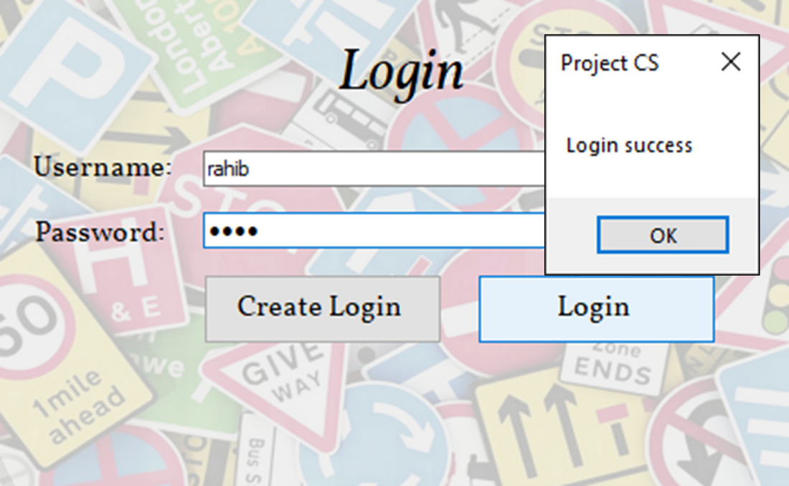
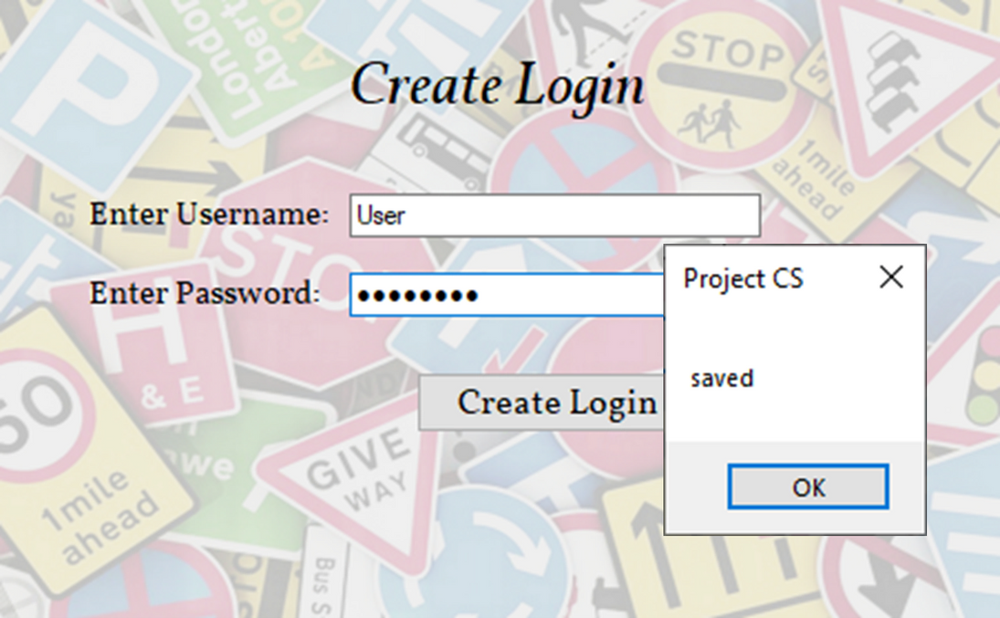
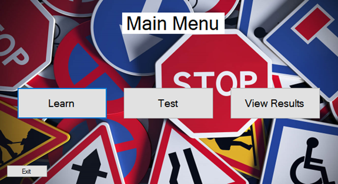
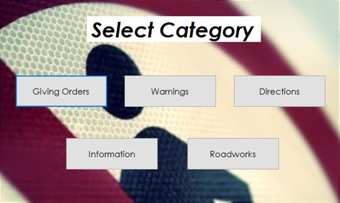
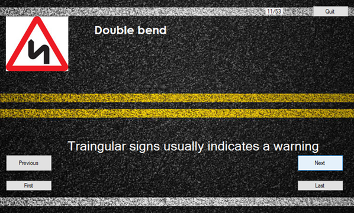
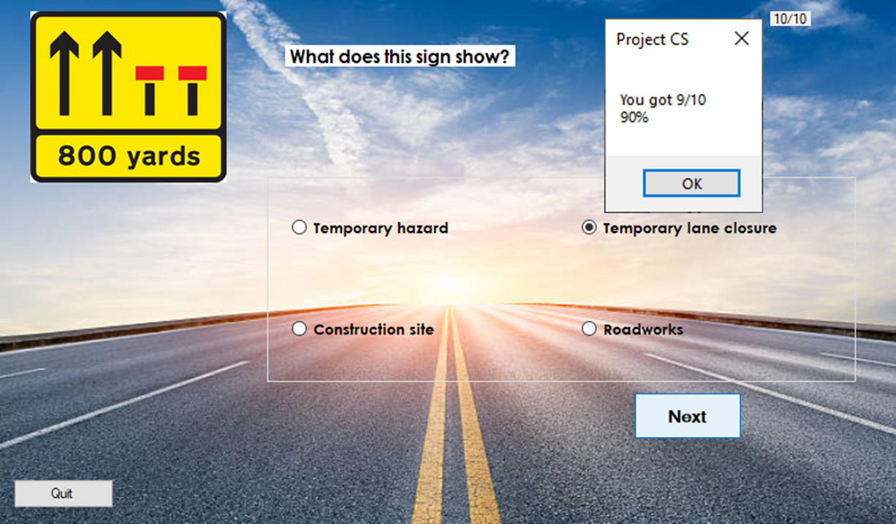
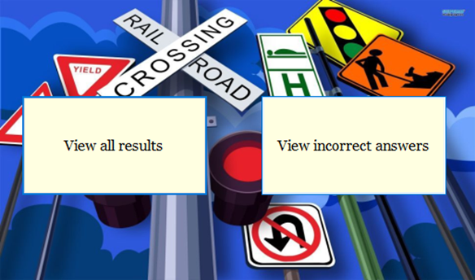
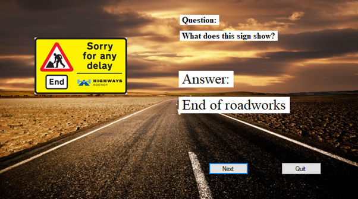
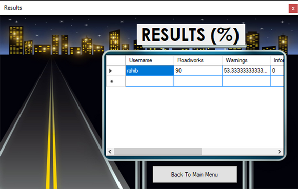
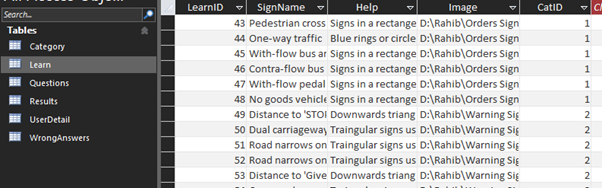

The login page displays a message if the login information is found and successful. If not, it would say "login failed".

The create login page displays a message if the username and password are valid. If the textboxes are empty, an error would show and prompt the user to enter details.

The main menu shows up once the login has been successful. It presents three buttons for the user to navigate around the program.

If the user selects the test or learn category, the program navigates to the category screen where the user has 5 options to choose from.

This screenshot shows a learning screen for the warning category. It displays an image of a sign with the name and a description, along with navigation buttons.

This screenshot shows a test screen for the Roadworks category. It presents an image of a sign with a question and four possible answers.

Once the user completes a set of questions, this screen shows, allowing the user to view their incorrect answers or the whole results.

If the user decides to view their incorrect answers, the program will show them the image and the question and answer of the ones they got wrong.

This screenshot shows the results for the user, displayed once they finish a particular test. Results are stored in a table with percentages for each category.

The data for the program is stored in the access database, including sign names, descriptions, file paths for images, and category IDs.